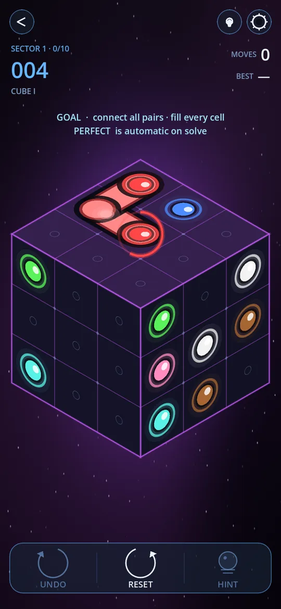

Every flow puzzle player knows this moment. Five lines are down, the board is nearly full, and then you see it: line two takes the wrong route. Until now that meant pressing undo three, four, five times, and losing the good lines on the way. From version 2.0.1, Circuit Trace lets you redo just the line that's wrong.


On a flat board: drag from a dot
Put your finger on one of the two dots of the finished line and start dragging. As soon as your finger leaves the dot, the old line disappears and you're drawing the new one. Your other lines stay exactly where they are.
- A tap does nothing. Touching a dot without moving leaves the line as it was and doesn't count as a move.
- It's one move. The redo counts as a single move on the move counter.
- Undo brings it back. Changed your mind? Undo restores the old line.
On the 3D cube: hold the dot
On the cube, swiping is how you turn it, so dragging from a dot would fight with turning. That's why the cube works differently:
- A tap or swipe on a dot turns the cube, like anywhere else.
- Hold the dot still and a ring in the line's colour fills around it. When the ring is full, the game asks Redo this line?
- Tap REDO and only that line is removed. Draw it again whenever you're ready.
New to the cube? How the 3D cube works covers turning it and crossing edges.
Tip: the game reminds you once. Press undo three times in a row and a short tip points you to the dot, so you don't have to remember any of this.
Redo or undo: which one when?
Use redo when one line is wrong and everything else is fine. That's the common case on bigger boards: you drew a colour early, and three lines later it turns out to block a corner.
Use undo when your last few moves were a sequence that only made sense together, or when you want to step back to a moment you remember. Undo walks back in time; redo fixes one colour.
Use reset when the whole plan was wrong. Sometimes a fresh look at an empty board is faster than repairing it. More about how the help buttons work in undo, reset and hints explained.
Does it cost anything?
Redoing a line doesn't use up an undo. In later sectors, where undos are limited, that makes it the cheaper way to fix a single colour. One thing to know: on goals that ask you to solve without undo, a redo counts as help too. Fair is fair.
In Time Trial
In Time Trial you could already redraw a finished line straight away, and that stays the same. There's no undo there, so redrawing is the only way to fix a line, and it's instant.
Play Circuit Trace free on Google Play: 700+ flow puzzles, now with one-line redo.
Frequently asked questions
How do I redo one line in Circuit Trace?
Drag from one of the dots of the finished line. The old line disappears as soon as your finger leaves the dot, and you draw the new route. Your other lines stay where they are.
How do I redo a line on the 3D cube?
Hold a dot of the finished line still until the ring around it is full, then tap REDO. A quick tap or a swipe turns the cube instead.
Does redoing a line use up an undo?
No. It counts as one move and doesn't use an undo charge. On goals that ask you to solve without undo, it does count as help.